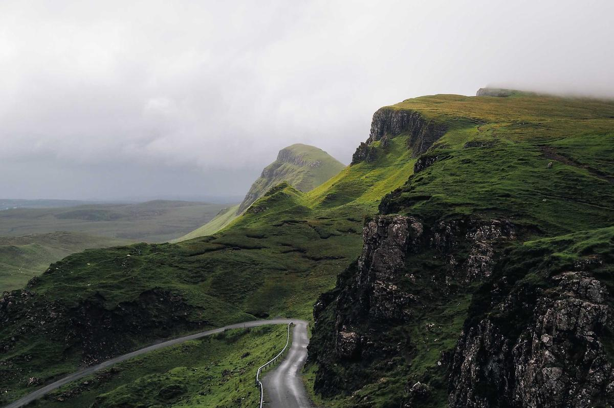

WEBGL2 · ANALYTIC PATH TRACING
让网页内容真正
穿过一层玻璃。
不是 CSS 位移图，也不是一层大模糊。组件在 GPU 中追踪光线， 从真实页面纹理中重新采样折射后的颜色。
向下探索折射原理 ↓Photo · Alexey Topolyanskiy / Unsplash

TWO-SURFACE REFRACTION
两次折射，
只发生在边缘。
圆角矩形 SDF 生成表面法线，GLSL refract() 分别计算入射和出射。
中心保持清晰，边缘才出现反向位移、透镜弯曲与轻微 RGB 色散。
2.19×反向位移
1.71×光学厚度
4路径 / 像素
Photo · Andrew Ridley / Unsplash

ONE SHAPE · THREE OPTICAL RESPONSES
同一轮廓，
没有层间接缝。
折射、轻毛玻璃和对角高光共享同一个 SDF coverage。 模糊采样中心从折射坐标连续滑回原坐标，边缘折射区的模糊权重严格为零。
- 01网页场景纹理
- 02边缘折射与色散
- 03内部轻雾化与微黑染色
Photo · Christian Joudrey / Unsplash
ZERO RUNTIME DEPENDENCIES
一个组件，接入任何普通网页。
保留真实 DOM 按钮负责语义和点击，WebGL Canvas 只负责光学合成。 场景变化、滚动、图片加载与尺寸变化都会自动刷新采样纹理。
import { liquidGlass } from "web-liquid-glass";
import "web-liquid-glass/styles.css";
const glass = liquidGlass("#nav", {
sceneRoot: "#app",
});